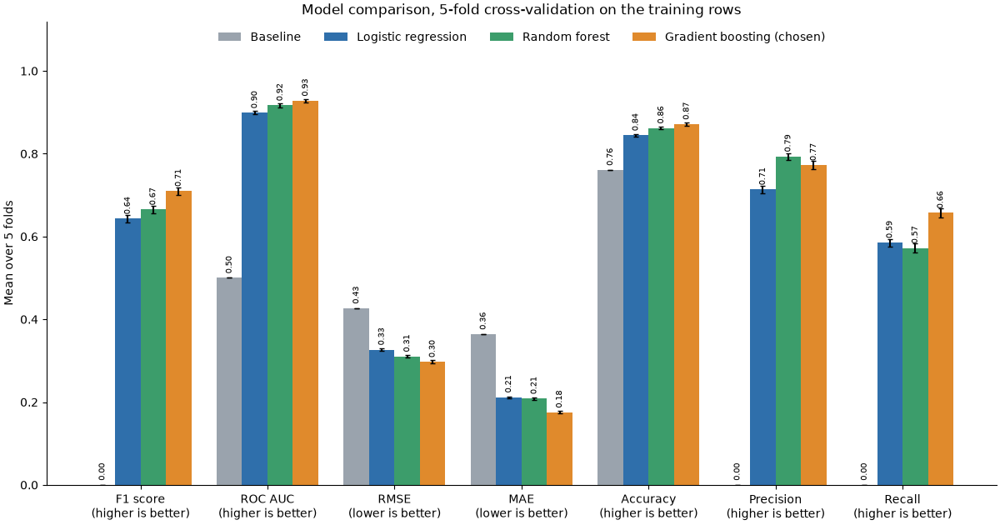

Projects
Filter by technology or category:
-

Expense Tracker CLI
Complete
A modular command-line expense tracker with monthly reports and CSV export.
-

Tabular Prediction with Exploratory Analysis
Pending quality review
Predicts whether a person earns above 50K from census data, with three models compared by cross-validation and an error analysis.
Recently updated on GitHub
Loaded from the public GitHub API and cached in your browser for one hour.